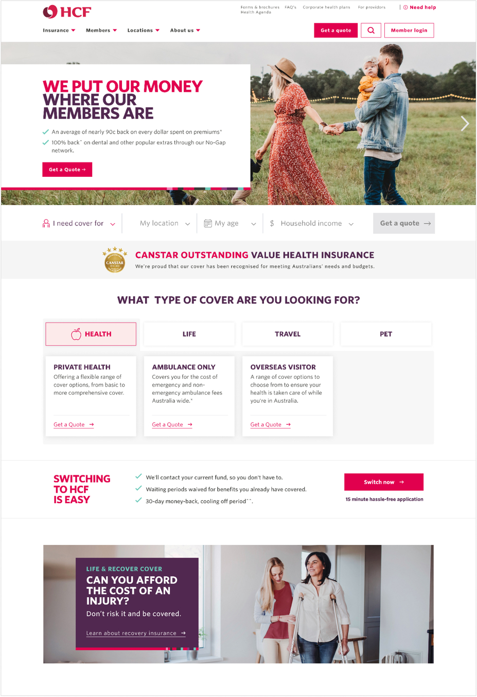
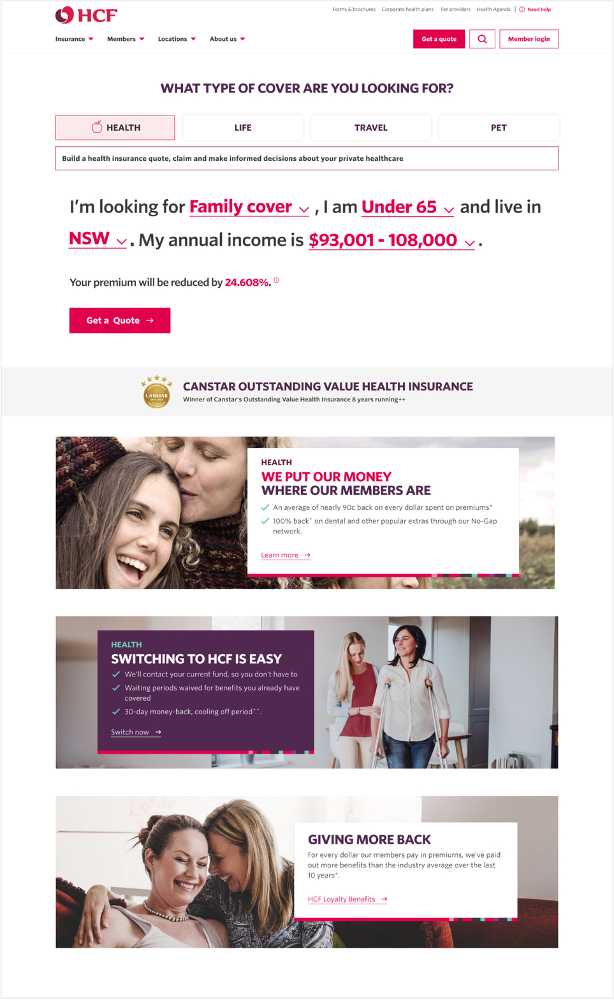
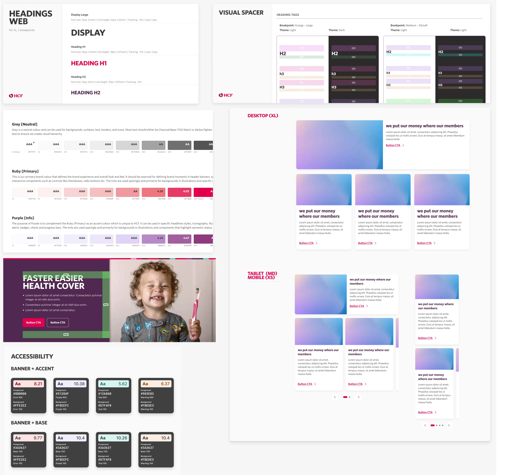
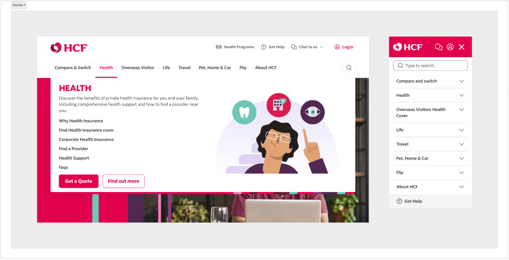
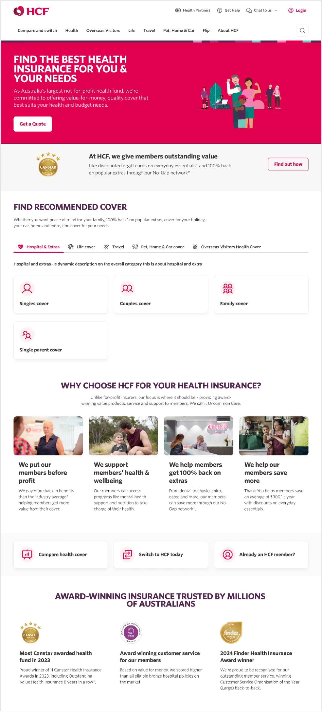
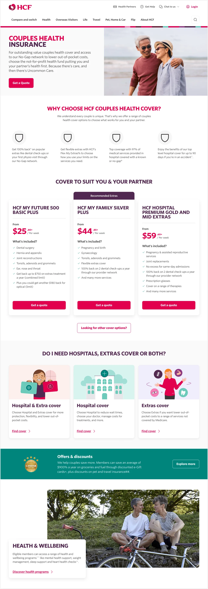
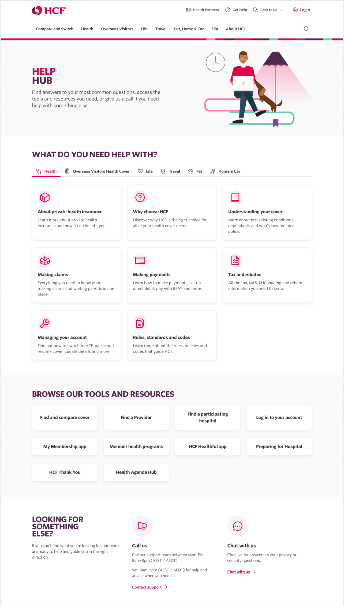
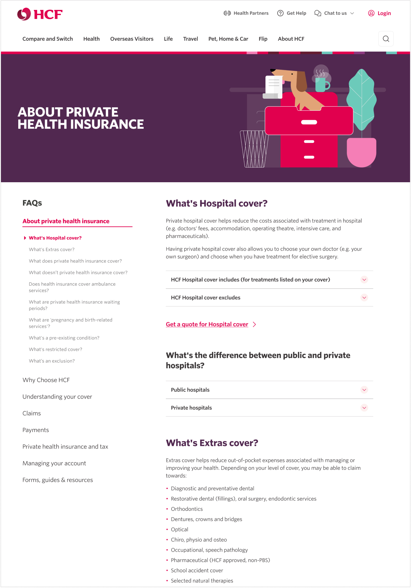
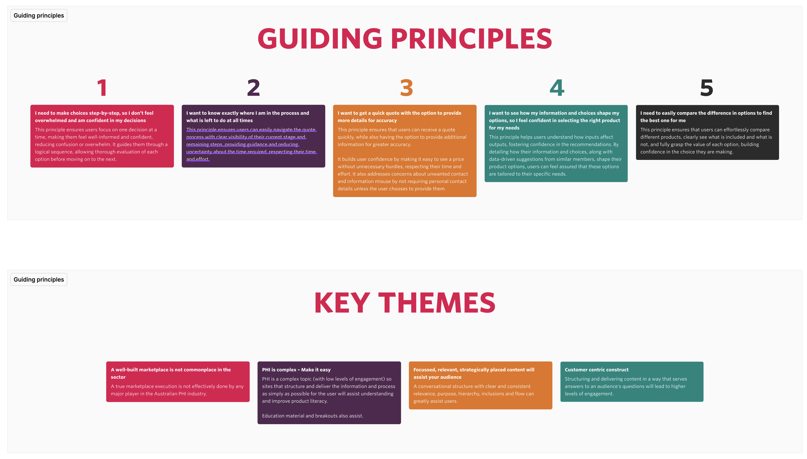
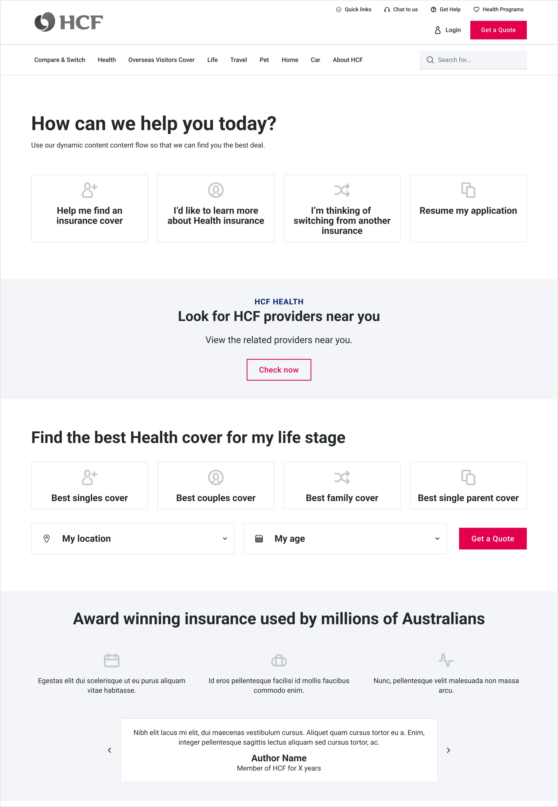

Initially in this role as a UI consultant, I moved into the Lead design position at HCF’s digital transformation project - Marketplace. Managing a team of up to 5 designers, I guided the team to lay the groundwork and baseline HCF's major digital reimagining and strategic pivot.
This great project involved reconsidering the look and feel of the older digital assets and ideating new foundational elements for a design system. This was the seed of a transformational project to change the brand from being known primarily as a healthcare provider to becoming a true 'marketplace' for all insurance needs.
With this scope, I guided the team to creating fresh componentry, templates and ready-for-dev pages for handover to production. We implemented an updated information architecture, introducing new sections and tools that would lay the groundwork for the project which I scoped, planned and did much of the UX discovery / research for - the path to purchase.
Homepage redesign
This was a self-initiated project to redesign and reimagine the HCF homepage. Initial showcases to the business were very received so that I almost unexpectedly got the green light to test 3 variations of these designs live using A/B testing.
These designs were a complete overall of current HCF designs and had some distinct goals -
- Reskin and lightly rebrand HCF digital assets for a cleaner, more minimalistic, modern and ultimately more usable interface. Removing the clutter so the user can interact with what is actually important to them
- Rethinking what kind of information a new user would like to see on the homepage. Rather than bombarding them with information without context, lead the user into the quote funnels with more of a storytelling element rather than being strictly product focused
- Give more prominence to different products that HCF offers. Rather than only being known as a Health insurance company, let users more easily browse products like Life, Travel, Pet by giving them some prominence and more easily categorising the solutions
- A redesign of the Homepage-facing Health Quote funnel, testing the questions in a different design format so that users may skip a number of questions within the flow for a faster initial quote experience.


Version 1 was the eventual winner - allowing the product sets to be more immediately visible on the home page, while creating a cleaner interface by removing a lot of the uneccessary clutter from current design. This allows the user to focus better on what matters to them and what they are looking for.
Without proper qualitative research, my guess as to why Version 2 performed better than Version 3 would be that V3 may have sacrificed a lot of in-situ and contextual information about the products for speed in completion of the initial quote funnel. The design did not allow for enough space/time for the user to understand the product and the information that they were providing to fully invest in the process
Both design V1 + 2 vastly outperformed the control which was the current state sales website, so this was a very successful project either way and will lead and inform what the team does within the Marketplace 1b project.
HCF Design System
My team was given a very short time frame to deliver the Marketplace 1a information architecture redesign (approximately 3 months), and a large part of the requirements for this project included a complete redesign of the look and feel of the Sales-facing website ie. a new design system.
The current digital experience at HCF was dated, cluttered, did not meet WCAG accessibility standards, had little strategy behind the use of brand assets, did not use scalable graphics and the overall repetitive use of limited components made the visual layout of the website difficult to navigate for the user.
A particular goal of ours was to begin using the primary ruby colour in an active way, by only allowing primary buttons in a layout if they were strategically leading users down through high engagement paths - namely, directing users to the Quote funnel / transactional part of the website. The reduction of ruby elements to only the most important elements of the site in fact strengthened it’s use as a brand asset. We also aimed to create more white space for elements to breathe and to guide the users eyes for travelling through the website with more focus.

We wanted to redefine the use of colour and space on the website. On the old site, everything from buttons and containers to components are all designed with hard, sharp edges. These designs are shown to perform well on corporate websites, but for an business whose reputation is built on health and being not-for-profit, we wanted to try to use friendly, rounded corners on elements of the new design system.
Marketplace 1a project - IA & Global elements
Marketplace is essentially a long-term digital transformation project which includes reimagining how HCF products and digital assets are presented, adding modern intelligence tools to the quote funnels, and improving the UX/UI of the digital assets to meet WCAG accessiblilty standards and responsive design (and making it look a lot nicer).
These are the main optimisations that we aimed to improve through this project -
- Completely redesign the main navigation and menus so that they offer clear next steps, including restructure of information architecture of health-related products to guide the user and allow them to find what they need faster
- Based on competitive analysis recommendations, to create a new 'Find Health Insurance' section with various informational landing pages and direct access to the quote funnel
- To redesign the functionality and information architecture of the huge FAQ section so that it is consolidated into a single area on the site where users can easily access this important information.
Information architecture and Global Header / Footer key considerations
When given the remit to redesign what was a cluttered and confusing UI in the global header, these were our key considerations taking into account the new information architecture.
- Minimise cognitive load - a large number of options can lead to choice paralysis and unintentionally sending users to the wrong page. Using nudge-based architecture helps to ensure we are sending users down a desired path
- Site depth - Users should be able to make it to their required destination with a minimal amount of clicks while still being exposed to the relevant information that will improve their likelihood of action or engagement
- Mobile use - Navigation will need to operate slightly differently on mobile with clear next steps maintaining visibility on a smaller screen and sufficiently sized tap targets
- Consistency - Using consistent labelling, and button designs to ease user's understanding of what page.

By replacing the current nav menu with the current actual product line and restructuring the IA to include informational sections such as 'Find..' which lead directly to the transaction funnel, we successfully reduced cognitive loads for the user and greatly simplified the user journey to successful conversion pages.
Find Health Insurance
One of the main additions to the sales website that we wanted to implement was a new section which allows users to navigate through informational landing pages categorised by popular cover-types. This would give users an alternate way obtain an initial quote while providing them contextual information required to make a decision, as well as giving us an opportunity to show them unique selling points and benefits they get from joining.
On each landing page we would offer users a faster way to obtain an initial quote by asking some required questions on the page itself. This is because we now understand the products the user is looking for, and are able to offer them recommendation. We could personalise the flow both for current and future visits. Our aim is to be able to ‘nudge’ the user through the steps of completing their quote funnel, with the ultimate aim of getting them to the summary pages and into the transactional process.


Get help / FAQs
Health insurance is a complicated and at times overwhelming product choice and although our overall plan was to minimise the content to what is most important to get the user to next steps, it's important for users in this journey to also have a way to access further information that they may be curious about that is not presented directly on the information pages, letting the user understand the process or products in greater detail to further inform their decision


The previous state where the FAQs were situated in many different sections of the site without a central repository was problematic both for user's usage of the site, and SEO as well. We consolidated the huge amount of content in the FAQs to a single page or section which is designed dynamically so that the content will change according to the in-page navigation on the left. This allowed us to retain the massive amounts of copy required for this section, while making it much more user and SEO-friendly while giving the business a baseline for how the FAQs should be approached for their other products.
Marketplace 1b - Transactional funnel discovery. strategy and UX
With completion and launch of Marketplace stage 1a, I was invlolved in leading the UX research discovery for 1b. This stage had the scope of enhancing the quote funnel experience by integrating a needs-based quiz and a product recommendation tool. This is a extensive step for the organisation as the vast majority of transactions at HCF move through these health products. We would design various paths into the funnnel such a direct path, objectives / needs based path and an information-led path (Find Health..).
Within the discovery stage of the project, we conducted 2 rounds of user testing and then competitive analysis to verify our understanding of what users wanted within these funnels and how we could simplify the experience for them while moving them through the funnel as quickly possible while redesigning the current weak points around the flow. This involved at first understanding the data behind user drop-off points and then rethinking and conducting user research around these key pages, while integrating them with the new dynamic tools which were now being built in the back-end.
At the end of the process, we understood exactly where the current experience was lacking in terms of upain points, and I was able to build a robust set of wireframe variations and working prototypes for a reimagined transactional flow experience. I believe that with this pre-work I set the team up for success as they tackle the UI elements of 1b, use qualitative testing to validate these decisions, and ultimately use the Design System that we newly created to integrate the new flow and prepare it for development.

